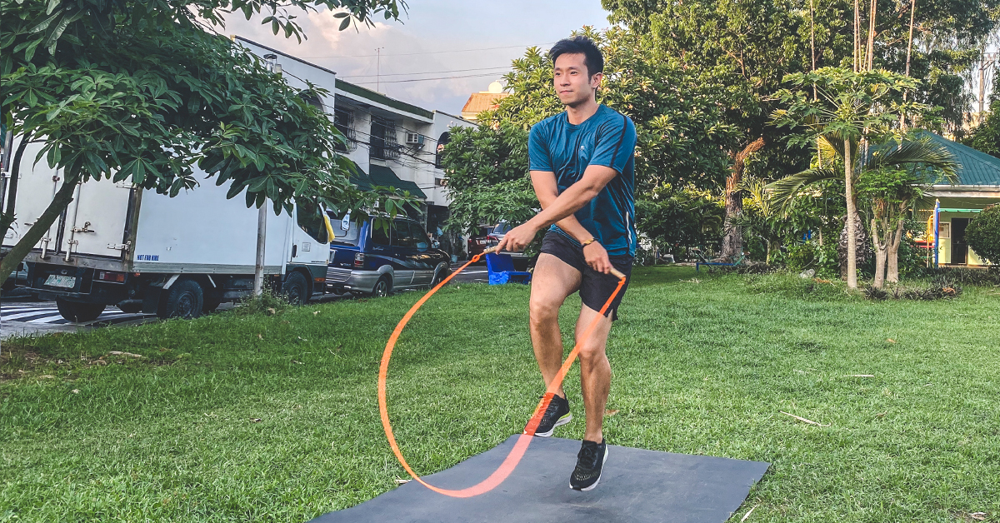
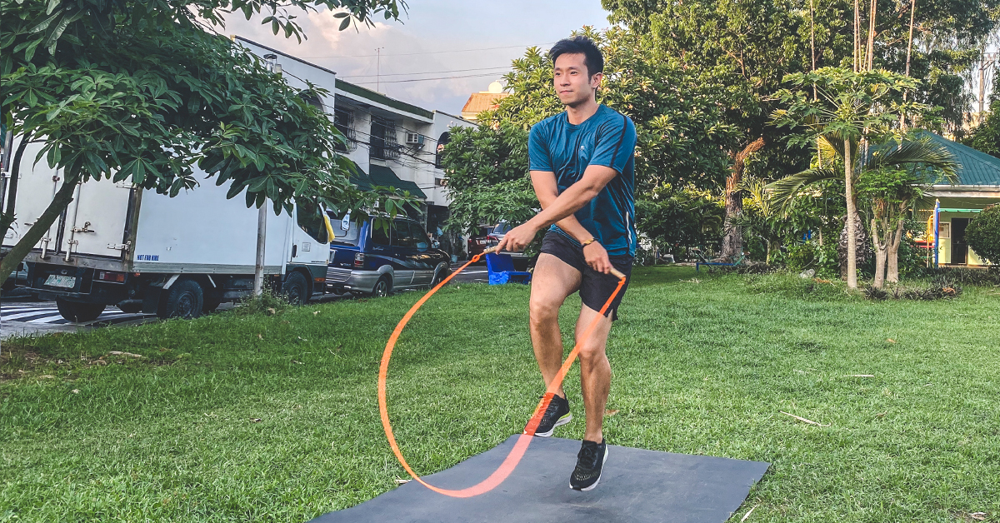

As a web developer, I excel in creating responsive and visually appealing websites using HTML and CSS. My skills include structuring web content effectively and applying CSS for innovative designs that provide seamless user experiences. I take pride in ensuring that my websites are not only functional but also aesthetically pleasing, catering to clients' specific needs.
In my web design projects using Canva, I creatively harness the platform’s intuitive tools to craft stunning visual content. I focus on aligning design elements with brand identities, ensuring that every graphic and layout effectively communicates the intended message.
Jumping rope has become a powerful and enjoyable part of my fitness routine. It not only helps improve my cardiovascular endurance but also enhances coordination and agility. I appreciate the versatility of jumping rope, as it can be done virtually anywhere, making it a convenient and efficient workout option.